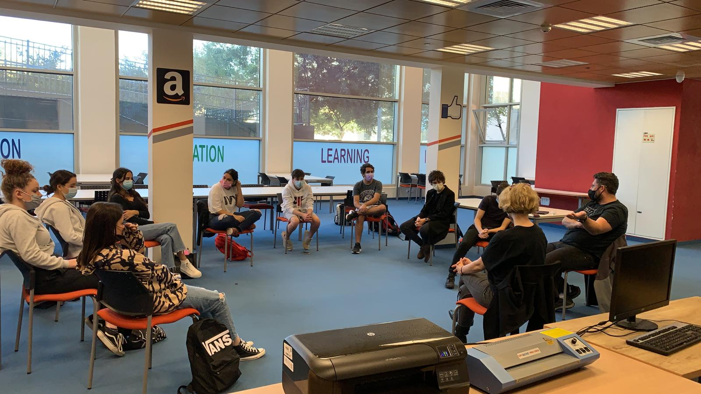

נושאים:
- סחר בבני אדם
- משבר האקלים
- זכויות בעלי חיים
- עובדים זרים
- אפלייה
- סדרי עדיפיויות
- זכויות אדם במשבר
ברוכים הבאים לשנתון עולם זכויות אדם, העיתון הבית ספרי של תיכונט העוסק בזכויות אדם.
היוזמה להוצאת עיתון העוסק בנושא זכויות האדם נראית כמובנת מאליה בבית ספר שחרט על דגלו גישה הומניסטית המחנכת לכבוד האדם באשר הוא אדם ולכיבוד זכויותיו. מטרתנו במערכת העיתון היא להביא לקוראינו, תלמידי ומורי בית הספר, משפחותיהם וקהל הקוראים כולו, נושאים מעניינים בתחום זכויות האדם. הנושאים נבחרו ונחקרו ע"י תלמידי שכבת י' והעבודה לארגון החומרים והכתבות הייתה עבודה עצמאית שחייבה רצינות, בגרות ואחריות.
בנוסף שילבה העבודה על העיתון שיתוף פעולה רב תחומי בין תלמידים בתחום האזרחות ומדעי המחשב במסגרת גישה חינוכית מתקדמת של שילוב תחומים ולמידה חוצה גבולות.
זהו הגיליון הראשון של השנתון ואני גאה מאוד בעבודתם הנאה של התלמידים המוכיחה את המודעות החברתית האזרחית הגבוהה שצמחה בהם. מעל במה זו אני קורא לכל מי שמעוניין להצטרף אלינו, העיתון מזמין כתבים מכל שכבות הגיל בבית הספר.
חג השבועות הינו חג הביכורים, ובטנא שלנו נח גיליון ביכורים זה, סימן לתקווה חדשה.
אוהד אורגל
עורך עיתון
עולם זכויות אדם

{% endblock %}